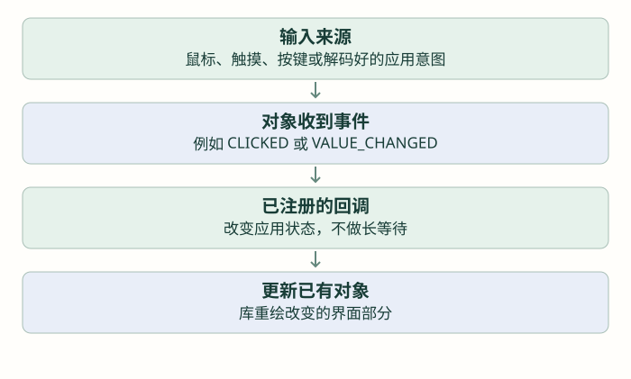

让界面响应：事件、输入与页面切换
先做一次点击加一，再区分鼠标、触摸与物理按键，最后管理多个页面的导航。
前置：完成上一篇「把界面排整齐：布局、样式与显示资源」。各篇独立示例按说明替换，不把多份页面创建循环叠在一起。
按钮已经画出来，怎样让一次操作真正改变界面？
前两篇只创建和摆放控件。现在建立一个完整过程：操作发生，库产生事件，注册的函数处理事件，应用状态改变，已有标签被更新。先做 Add 计数器，不立即加入蓝牙、传感器和页面跳转。
这里的事件属于 LVGL 的对象系统，不是 EXTI 硬件中断。LVGL 事件回调在处理这次事件的调用路径里执行；本课程统一从 UI 所属的普通执行路径操作，不在回调里等待按键松开或做长时间工作。

回调函数怎样收到事件？
lv_event_t 是一次事件的信息类型；回调签名是 void callback(lv_event_t *e)。库在事件发生时把它的地址交进来。lv_obj_add_event_cb 四个参数依次是对象、回调函数地址、事件过滤值、应用附加数据，返回事件描述指针，本例不使用该返回值。
先只注册 LV_EVENT_CLICKED，含义是关注点击事件。按下、释放、长按和值变化是不同事件，先不使用 LV_EVENT_ALL 同时接收所有通知。也不需要 __weak，事件回调由注册关系决定。
| 接口 | 输入与返回 | 何时需要 |
|---|---|---|
| lv_event_get_code(e) | 事件地址；返回 lv_event_code_t | 一个函数处理多种事件时区分类型 |
| lv_event_get_target(e) | 事件地址；返回事件目标对象指针 | 判断操作的是哪个对象 |
| lv_event_get_user_data(e) | 事件地址；返回注册时保存的 void * | 取回应用上下文；该存储必须仍有效 |
| lv_obj_add_event_cb(...) | 对象、函数、过滤值、附加指针；返回描述指针 | 建立对象到处理函数的联系 |
下面注册时传 NULL，不使用附加数据，避免在第一轮增加上下文转换。点击次数由应用计数保存，标签只是它的显示结果。
写完计数器的整条正常路径
先声明长期保存的标签指针和计数，再写回调，最后创建对象并注册。回调只做“加一＋更新”，不在里面创建另一页或启动传感器采集。
独立页面模块 · 显示、时基已就绪，create 只调用一次；不要叠加前篇的同名页面
static lv_obj_t *event_label;
static lv_obj_t *event_button;
static unsigned clicks;
static void add_clicked(lv_event_t *e)
{
(void)e; /* 只注册 CLICKED，本例不读取其他事件信息。 */
clicks++;
lv_label_set_text_fmt(event_label, "Count: %u", clicks);
}
void lesson_counter_create(void)
{
clicks = 0;
event_label = lv_label_create(lv_scr_act());
lv_label_set_text(event_label, "Count: 0");
lv_obj_align(event_label, LV_ALIGN_CENTER, 0, -30);
event_button = lv_btn_create(lv_scr_act());
lv_obj_set_size(event_button, 110, 42);
lv_obj_align(event_button, LV_ALIGN_CENTER, 0, 30);
lv_obj_add_event_cb(event_button, add_clicked, LV_EVENT_CLICKED, NULL);
lv_obj_t *caption = lv_label_create(event_button);
lv_label_set_text(caption, "Add");
lv_obj_center(caption);
}如果这个页面反复创建，旧对象仍存在，会叠在一起，还可能积累回调。先只创建一次，后面再按页面生命周期清理。也不要把 callback 写进 main 函数内部。
从鼠标点击，走到手表的物理按键
桌面模拟器通常已把鼠标接到 LVGL 输入设备。真实板上没有触摸驱动时，屏幕上的 Add 不会因为手指碰到它就收到点击。要让库知道操作，需要输入端口，或者把已经解码好的应用按键意图交给 UI。
LVGL 的 lv_indev_drv_t 是输入驱动描述，lv_indev_t 是注册出的输入设备对象。读取回调收到描述指针和 lv_indev_data_t 输出状态指针，没有返回值；库周期调用它，应用填写当前状态。它不是让应用在里面阻塞等到有按键。
| 类型 | 回报内容 | 典型用途 |
|---|---|---|
| POINTER | 坐标与按下/释放状态 | 触摸或鼠标 |
| KEYPAD | 逻辑键值与按下/释放状态 | 上下左右、确认等键 |
| ENCODER | 旋转增量与按下/释放状态 | 旋钮加确认键 |
按键导航还需要 group，即一组可以取得焦点的对象。lv_group_create 无参数，返回组指针；lv_group_add_obj(group,obj) 把对象加入组；lv_indev_set_group(indev,group) 把输入设备连接到组，后两个无返回值。焦点选择的是将要接收操作的对象，不是把所有按钮都同时点击一次。
完整输入端口要处理消抖、长按与释放。只持续报告 PRESSED 不报告 RELEASED，会导致交互状态异常。本仓库的 app.c 当前采用按键轮询，将上一页/下一页等意图直接交给页面管理，并不等于已经注册了一个通用触摸驱动。
没有输入端口时，也能单独验证事件处理
lv_event_send(obj, code, param) 向对象发送逻辑事件，返回 lv_res_t，可能表示对象在处理中被删除等情况。测试时可以在普通 UI 路径执行一次下句，确认回调链；它不模拟完整的按下视觉状态，也不应在 while 中无条件不停执行。
event_button 已创建；作为一次性逻辑测试，不从 GPIO ISR 直接调用
lv_event_send(event_button, LV_EVENT_CLICKED, NULL);再从一个页面走到多个页面
多页面先选择一个明确策略：可以保留多个页面，隐藏或切换显示；也可以离开时删除，回来再创建。保留占内存，删除要求清理引用，二者都要与定时器和对象指针生命周期配套。
当前仓库使用 tileview，像横向排列的几个页面格子。lv_tileview_create(parent) 返回容器；lv_tileview_add_tile(tileview,col,row,dirs) 返回一个页格；lv_obj_set_tile(tileview,tile,anim) 切到目标格，没有返回值。页格本身就是父对象，可直接交给页面创建函数。
独立双页示例 · 先理解页格，再将切换接到已有应用按键意图
lv_obj_t *view = lv_tileview_create(lv_scr_act());
lv_obj_set_size(view, 240, 240);
lv_obj_t *first = lv_tileview_add_tile(view, 0, 0, LV_DIR_RIGHT);
lv_obj_t *second = lv_tileview_add_tile(view, 1, 0, LV_DIR_LEFT);
lv_obj_t *a = lv_label_create(first);
lv_label_set_text(a, "FIRST");
lv_obj_center(a);
lv_obj_t *b = lv_label_create(second);
lv_label_set_text(b, "SECOND");
lv_obj_center(b);
/* 后续一次导航操作中可切换： */
lv_obj_set_tile(view, second, LV_ANIM_ON);仓库 ui.c 的 UI_N_PAGES 实际为 7，依次创建时钟、活动、心率、步数、血氧、睡眠、自适应页面；一些旧注释还写四页或五页，读数组与实际创建为准。ui_page_next/prev 切换页格，滚动事件再更新缓存页码与圆点，不能提前修改缓存后又把真正更新条件跳过去。
练习先完成一个可累加按钮，再做两页切换，最后接两个已经消抖的物理按键。每一步都确认“一次意图只处理一次”；不要一上来把滚动、长按、双击和传感器触发全部放进一个回调。
检查理解
参考与项目源码
- LVGL 8.3 · overview/event
- LVGL 8.3 · porting/indev
- LVGL 8.3 · overview/indev
- LVGL 8.3 · widgets/extra/tileview
按仓库实际的 LVGL 8.3.11 与本地头文件组织接口。教学图与网页模型不是设备实测；源码引用均使用 GitHub 文件页。完整索引见 资料来源。